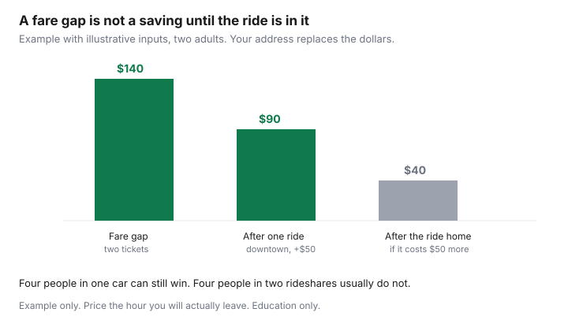

Travel · Canada
Cheap flights in Canada: when Hamilton, Waterloo, Abbotsford or Montréal Metropolitan beats the big airport

A cheap flight from a smaller Canadian airport is only cheap after the ride, the parking and a winter backup plan are added to the fare. Hamilton (YHM), Region of Waterloo (YKF), Abbotsford (YXX) and the new Montréal Metropolitan Airport (YHU) can undercut Pearson, Trudeau or Vancouver, but a fare gap can shrink fast: in our example, a $140 gap for two adults is $90 once a pricier downtown ride is in it.
Who flies which route changes by season, so this page is the household test, not a timetable. Expedia’s 2026 Canada booking windows are in when to book from Canada. Use that window. Use this page to decide whether the other airport belongs on the search at all.
Key takeaways
- Price the airport you will actually leave from. YHM (Hamilton) and YKF (Waterloo) near Toronto, YXX (Abbotsford) near Vancouver, and YHU (Montréal Metropolitan, the former Saint-Hubert airport) near Montréal.
- New in 2026: Porter began flights from Montréal Metropolitan on June 15, 2026, with 12 domestic routes (Porter). It is a domestic airport; Trudeau stays the sun and international option.
- A fare gap is not a saving until you subtract the extra ride, parking and any extra night. Example with made-up inputs: $140 becomes $90 after one pricier ride, and about $40 if the ride home costs more too.
- A U.S. border airport (Buffalo, Burlington, Seattle) can beat YYZ or YVR. Add the exchange rate, the border and a passport. NEXUS is $120 USD for five years (CBSA).
- Smaller fields often have one or two flights a day. A winter cancellation can mean tomorrow. The airline still owes a rebooking within 48 hours or, if it can’t, a refund at your choice (CTA).
- Keep a shortlist of at most three airports and set a separate Google Flights alert on each airport code.
Which alternate airports near Toronto, Montréal and Vancouver are worth searching?
Hamilton and Waterloo for the west end of the Greater Toronto Area, Abbotsford for the Fraser Valley, and Montréal Metropolitan for the South Shore and east end of Montréal. A secondary airport earns a place on your list only when an airline publishes a route your household would actually fly and the drive is not a second trip. Major hubs stay on the list as the backup.
| Airport | Who it is for | What flies there (winter 2026–27) |
|---|---|---|
| YHM, John C. Munro Hamilton | West Greater Toronto, Hamilton, Niagara and Brantford households who can reach the field without crossing the city at rush hour. | Porter flies domestic routes plus winter sun: Cancun (6 a week), Fort Lauderdale and Orlando (daily), Puerto Vallarta, and Montego Bay from December 20, 2026. WestJet flies to Calgary year-round and seasonal Cancun and Punta Cana. Air Canada’s Landline coach links to Pearson. |
| YKF, Region of Waterloo | Households already in Waterloo Region, Guelph or Cambridge. A Scarborough departure is rarely a YKF trip. | Flair flies direct to Calgary and Halifax. Sunwing Vacations, operated by WestJet, flies weekly to Cancun and Punta Cana from December 19, 2026. Air Canada’s Landline coach links to Pearson. |
| YXX, Abbotsford | Fraser Valley households, and some Vancouver trips when the fare gap survives the drive past YVR. | WestJet and Flair are the airlines the airport lists. Price the same days against YVR, then add the highway and parking. |
| YHU, Montréal Metropolitan (formerly Saint-Hubert) | South Shore and east-end Montréal households flying within Canada. | Porter has flown from the new terminal since June 15, 2026: 12 domestic routes including Toronto (Pearson and Billy Bishop), Vancouver, Calgary, Edmonton, Halifax, Québec City and Hamilton, some seasonal. No sun or U.S. flights; use YUL for those. |
Billy Bishop (YTZ) is a different product. It saves a downtown Toronto household time, not usually a basic-fare dollar. Keep it in the time column. London, Kelowna and Victoria are regional airports for people who live there, not “alternates” to Pearson for a household in Etobicoke.
How do you know a cheaper fare from another airport is really cheaper?
Write one line: fare gap minus the extra ground cost, minus parking, minus an extra night if the flight times force one. If the line is not clearly positive, fly the major airport.
| Line | Pearson habit | Hamilton alternative |
|---|---|---|
| Two one-way fares | $210 × 2 = $420 | $140 × 2 = $280 |
| Rideshare from a west-GTA address | $70 | $45 |
| Same rideshare from downtown at 4 p.m. | $80 | $130 |
| Seven nights of parking, if you drive yourself | Use the lot you will actually book | Often cheaper, and only a win if the car is already the plan |
| What is left of the gap | From the west end, the $140 gap grows to $165. From downtown it becomes $90, and about $40 if the ride home also costs $50 more. | |

Time the drive in the hour you will leave, not at noon on a Tuesday. A 5 a.m. Hamilton departure that means leaving Mississauga at 3 a.m. is a different product from a noon flight. If the only flight home lands at 11:30 p.m., the “cheap” ticket also bought you a long day and a late ride. Four people in one car can still win. Four people in two rideshares usually do not. Add bags: a basic fare that then needs a checked bag at the airport is the other guide, WestJet’s prepaid bag and the Air Canada and WestJet sizers. For the ride itself, compare parking, rideshare and transit in getting to Canadian airports cheaply.
When does flying from a U.S. border airport beat Pearson or Vancouver?
When the fare gap is still clearly positive after the exchange rate, the drive and the border wait. The usual pairs are Buffalo (BUF) for Niagara and the west end of the Greater Toronto Area, Burlington (BTV) for Montréal’s South Shore, and Seattle (SEA) for Vancouver.
The ticket is in U.S. dollars. Convert it at the rate your card will actually charge, including any foreign-exchange markup. The method is the FX guide. A fare that looks $80 cheaper in USD can be a tie after the conversion.
The return is a land border, not an air connection. Plan on a valid passport to fly, a plan for the car or bus home, and a plan for a late landing when the rental counter is closed. NEXUS is what makes a regular version of this trip tolerable. It costs $120 USD for five years, and children under 18 are free when a parent or guardian is a member or applies at the same time (CBSA). The break-even is hours you fill in yourself, in the NEXUS guide. Without the card, a weekend queue at the Peace Bridge, a Québec–Vermont crossing or Peace Arch is part of the fare. Do not book the U.S. airport for a funeral, a same-day meeting or a winter Friday evening and hope the line is short.
A U.S. departure also changes the receipt. Some airline fees are priced in U.S. dollars when the trip starts in the United States, so read that receipt separately. You clear U.S. customs at the U.S. airport and Canadian customs at the land border on the way home. More trade-offs are in U.S. trips from Canada.
What happens if your flight from a small airport is cancelled in winter?
On a thin schedule, the next flight may be tomorrow, not in two hours. Your passenger rights still apply, but they do not create a second flight that was never scheduled, and the problem is worst from November through March.
- Frequency. If the board shows one departure a day, a cancellation is an overnight. Price a hotel near that airport before you call the fare a win. If you would not pay for that hotel, you do not have a backup.
- Winter. Freezing rain, fog and a short de-icing queue hit thin schedules first. The airline may rebook you through the hub you were trying to avoid, a day later.
- Your rights. Under the Air Passenger Protection Regulations, a cancellation the airline controls means rebooking or a refund, not a voucher you must accept. Since September 8, 2022, even for weather or other causes outside the airline’s control, it must rebook you on a flight leaving within 48 hours of the original departure; if it can’t, you choose a refund or rebooking, and a refund is due within 30 days (Canadian Transportation Agency). The worksheet is the refund versus voucher guide.
- The last flight of the day. On a small field, do not book it in January on a fare you cannot change unless the trip can slip a day. The hours you lose are the real price.
Airlines also change schedules weeks out. Re-read the confirmation when the airline emails a time change. A two-hour slide can miss the rideshare you already booked, or a shift you cannot miss. The 24-hour window to unwind your own mistake is in the booking-mistake guide. A schedule change the airline makes later is the airline’s problem to fix, and you should answer the email.
How do you build a household airport shortlist?
Pick at most three airports for the trips you actually take, write down the ground cost from your address once, and rebuild the list twice a year when the summer and winter schedules come out. More than three and nobody will search them.
- Sun weeks (Mexico, the Caribbean, Florida): home hub, one Canadian secondary field if a leisure flight is actually scheduled that month, and one U.S. border airport only if NEXUS or a calm weekday border is realistic. The month matters too: see the shoulder-season guide.
- Domestic visits (a parent in Halifax, a weekend in Calgary): home hub and the secondary field only when you live closer to it than to the hub. Do not drive from Scarborough to Waterloo to save $40.
- Write the ground cost once for your address, in the hour you usually leave. Reuse it on every search.
- Rebuild the list twice a year. A route that made Hamilton useful in February may not exist in September, and a new airport (like Montréal Metropolitan in June 2026) can appear.
Put the shortlist where the booking happens: a note on the fridge, or the top of the shared trip sheet. The person who books should not have to remember that Abbotsford exists.
How should you set Google Flights alerts for more than one airport?
Set one price alert per airport code you would really use, with “nearby airports” turned off, and add your ground cost yourself. Use the alert as a watch, not as a decision.
- YYZ and YHM are two alerts. A single alert with nearby airports turned on will celebrate a Hamilton fare as if you lived at the terminal.
- Use a plus-or-minus three day calendar before you lock time off. A Tuesday fare that forces two extra vacation days is not cheaper for a household that works those days.
- Buy inside the booking window from the flight guide (domestic economy often 31–45 days out, international 15–30 days, in Expedia’s February 2026 Canada data). An alert six months out is a hobby.
- When the email arrives, open the fare brand. A dip that deletes the carry-on, or that lands at 11 p.m. on a one-flight field, is not the deal the email described.
If a booking site is easier for the multi-city search, use it to compare and then decide who issues the ticket. The airline and the agency do not share the same 24-hour fix. More travel guides are in the Travel hub.
Sources
- Porter Airlines: launch carrier at Montreal Metropolitan Airport (YHU), 12 routes from June 15, 2026 (24 Mar 2026).
- Porter Airlines: winter 2026–27 routes, including Hamilton–Montego Bay and added Hamilton sun frequencies (30 Apr 2026).
- Hamilton International Airport: airlines and destinations. Read 18 Oct 2026.
- Region of Waterloo International Airport: winter 2026–27 destinations (14 Oct 2026).
- Abbotsford International Airport: airlines. Read 18 Oct 2026.
- Canada Border Services Agency: NEXUS application fee ($120 USD; under-18 fee waived with a parent or guardian member or co-applicant); CBP: five-year membership.
- Canadian Transportation Agency: refund rules for disruptions outside the airline’s control (48-hour rebooking, refund within 30 days), in force September 8, 2022.
- Expedia.ca Air Hacks (February 2026 Canada data), as cited in the booking-window guide: domestic economy cheapest 31–45 days out, international 15–30 days.
- WestJet baggage and fare pages: basic-fare bag and change limits that change the all-in price of a secondary-airport ticket.
- Airport schedules change by season. Confirm the current board before you book a transfer.
Frequently asked questions
Which Canadian airports are the usual alternates to Pearson, Trudeau and Vancouver?
Hamilton (YHM) and Region of Waterloo (YKF) near Toronto, Abbotsford (YXX) near Vancouver, and Montréal Metropolitan Airport (YHU, the former Saint-Hubert airport) near Montréal. Porter began flights from YHU on June 15, 2026, with 12 domestic routes. Confirm this season’s board: a route that existed last winter may be gone.
How do I know a cheaper fare is actually cheaper?
Subtract the extra rideshare or drive, parking, and any extra hotel night from the fare gap, for the hour you will really leave and for the whole party. Example with made-up inputs: a $140 gap for two adults becomes $90 if the downtown ride to Hamilton costs $50 more than the ride to Pearson, and about $40 if the ride home costs $50 more too.
Is Buffalo, Burlington, or Seattle worth it?
Sometimes, after you convert the U.S.-dollar fare at the rate your card will charge and add the land border. Plan on a valid passport to fly. NEXUS costs $120 USD for five years, and children under 18 are free when a parent or guardian is a member or applies at the same time. Without it, a weekend border queue is part of the fare.
What if the only flight of the day is cancelled in winter?
On a thin schedule, the next flight may be tomorrow, so price that overnight before you book. Under the Air Passenger Protection Regulations, even for weather the airline must rebook you on a flight leaving within 48 hours of the original departure; if it cannot, you choose a refund or rebooking, and a refund is due within 30 days. Those rights do not create a second flight that was never scheduled.
Should I turn on nearby airports in Google Flights?
No, if you want an honest fare. Search each airport code on its own and add the ground cost from your shortlist. A nearby-airport alert will celebrate a Hamilton fare as if you lived at the terminal.
Researched and drafted with AI assistance and fact-checked against official Canadian sources. How we create content.